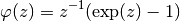
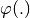
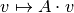
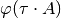
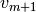
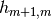
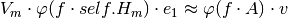
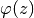

KrylovPhi¶
The KrylovPhi module is designed to allow efficient computation of the following function by a Krylov subspace approximation.

The class KrylovPhi provides a means to efficiently store a Krylov space and access the  function.
This space can then be reused or a new space computed without reallocation of new memory.
Additionally, this class contains an error estimation algorithm that determines a stepsize  for which the Krylov subspace approximation fulfills certain tolerances.
This is of central importance to the Exp4 algorithm.
for which the Krylov subspace approximation fulfills certain tolerances.
This is of central importance to the Exp4 algorithm.
- class expint.methods.KrylovPhi.KrylovPhi(A, exp4=None, tau=1.0, m=None)¶
Compute the Krylov subspace approximation of phi(t*A)v with phi(z) = (exp(z)-1)/z
- Arguments of constructor:
- A
- can be one of the following: - matrix represented as an nxn np.ndarray - function implementing the linear map  - instance of subclass of RHS. the ApplyDf function is used as the A*v function
- exp4 (optional)
- an instance of the class Exp4. This enables the use of a scaled norm based on the current iterate.
- tau (default: 1)
- factor in 
- m
- tuple containing the following (in this order)
- m_min: minimal Krylov space size
- m_max: maximal Krylov space size
- m_opt: optimal Krylov space size (m_min < m_opt < m_max)
- m_suf: sufficient Krylov space size (currently unused)
- compute(v)¶
Computes the Krylov subspace with starting vector v. sets the following member variables:
Parameters: v – Starting vector of the Arnoldi iteration. - self.Vm
- orthonormal basis of Krylov space
- self.Hm
- Hessenberg matrix
- self.v_m1
- 
- self.h_m1
- 
- generalizedResidual()¶
Returns: generalized residual as defined in [Hochbruck et al.], Section 6.3 It is a vector (in direction of ) of length self.n = len(self.v).
- krylovStep()¶
Executes one Krylov step, i.e. increases dimension of Krylov space by 1.
- phi(f=1)¶
Returns:  f is a factor (eg. phi3 uses 1./3)
Be sure to call compute(v) first to build the Krylov subspace!
- phi3()¶
Returns: 3-tuple of matrices ( phi(t*A), phi(2*t*A), phi(3*t*A) ) Be sure to call compute(v) first to build the Krylov subspace!
- phiMat(z)¶
Parameters: z – Matrix argument to 
Returns: 
- setA(A)¶
Checks type of A and sets internal variables accordingly
- setExp4(exp4instance)¶
set self.Exp4Instance to given argument
- stepsize_kry(h, verbose=False)¶
- Compute new Krylov stepsize
- If the number of steps is in [m_min, m_max], preserve step size.
- If m > m_max, reduces h_kry until error bound holds.
- If m < m_min for at least two consecutive steps, increases h_kry.
Returns: a tuple with boolean (accept=true) and the Krylov step size h_kry.
- stop()¶
Stopping Criterion
Returns: True if iteration is converged